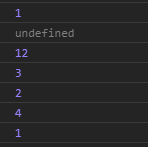

When we run the code as it is, we get:
The first output is 1 because that is the initialized value for x in the global scope.
The reason why we get undefined for the second output is because in the function foo() , we declared x again in the if block. Therefore, var x will be hoisted with undefined before our output is executed.
The third output gives us 12 because we have a call to foo1() inside foo(). We declared x in foo1() so we once again hoist it to undefined before our if block. Hence
z = 4 will be executed. Eventually, our output will be 5 +3+4 which is 12.
The if block will execute x= 3 so our fourth output is 3
y is still 2 and z is still 4 hence our fifth and sixth outputs
For the last output, we are retrieving the value of x in the global scope which is still 1